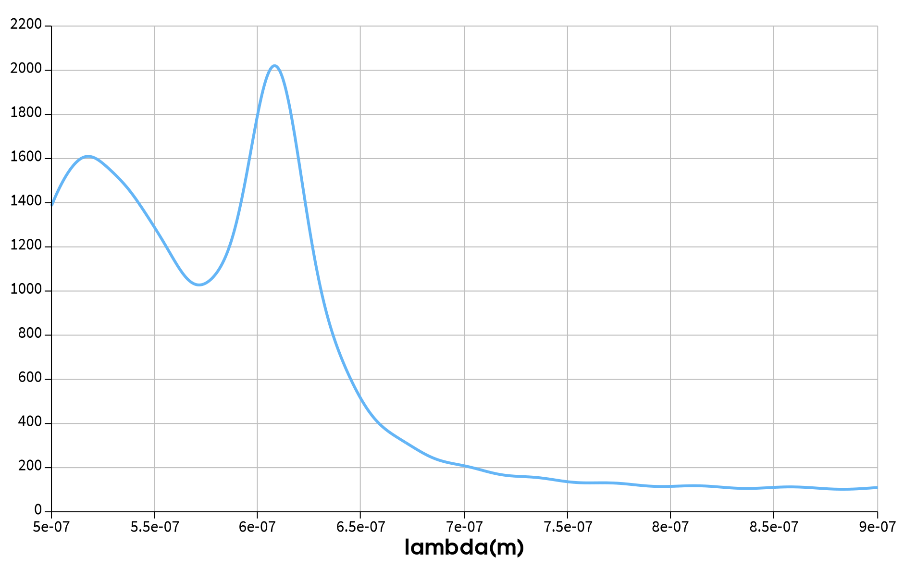
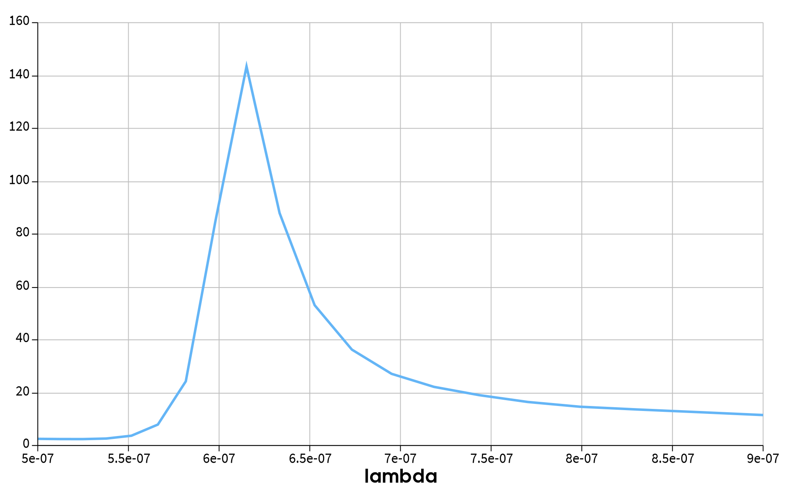
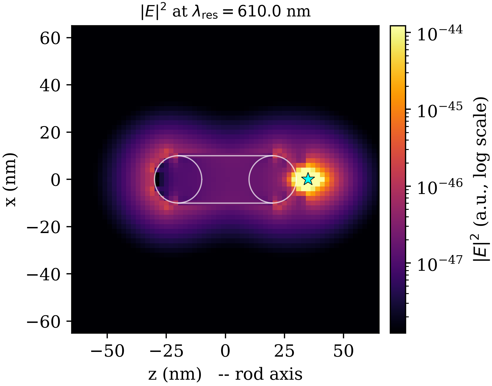

پیامد دقیق: \(m\) و \(\beta\) اعداد کوانتومی خوب میمانند؛
\(l\) و تبهگنی \((2l+1)\) نه.
نشانهی تجربی: کره یک تشدید دارد، میله دو تشدید
(طولی و عرضی) — Sönnichsen 2002.
هشدار بیان: نگویید «برچسب کروی غلط است»؛ بگویید
«دامنهی اعتبار محدودی دارد». این دقیقترین جملهی مقاله و بهترین سپر در
برابر ایراد است.
هندسه و روش شبیهسازی
پارامتر
مقدار
نانومیله (بدنه + دو کلاهک نیمکروی)
\(L=\nm{60}\)، \(D=\nm{20}\)، \(R=\nm{10}\)
دوقطبی طولی، روی محور تقارن
\(z=\nm{35}\) (گپ \(\nm{5}\) تا راس کلاهک)
روش / ماده
3D-FDTD / طلا: Johnson & Christy
مش موضعی
\(\nm{2}\) روی \(40\times40\times80\) nm
جعبهی توان / ناحیهی FDTD
مکعب \(\nm{400}\) / مکعب \(\nm{600}\) با PML
اعتبار مدل کلاسیک موضعی: گپ ۵ nm بسیار بزرگتر از آستانهی
تونلزنی (~۱ nm)؛ قطر میله بزرگتر از حد ~۱۰ nm.
بگویید: توان تابشی از انتگرال بردار پوئینتینگ روی
جعبهی بسته؛ جعبه حداقل ۱۰۰ nm از PML فاصله دارد تا بازتاب عددی وارد شار
نشود.
نتیجهی ۱: طیف فاکتور پورسل

قله: \(\Fp \approx 2020.48\) در \(\nm{607.9}\) — بیش از سه
مرتبه بزرگی شتاب در نرخ واپاشی کل
بگویید: قلهی سمت چپ مد عرضی/مرتبهبالاست؛ قلهی
اصلی مد دوقطبی طولی. افزایش LDOS در نوک میله علت اصلی است.
نتیجهی ۲: توان تابشی و جابهجایی سرخ

قله: \(T_{\max} = 143.42\) در \(\nm{615.1}\)
جابهجایی سرخ دو قله: حدود \(\nm{7.2}\) — ناشی از
پاشندگی اتلافی طلا و تبدیل مدهای میدان نزدیک به امواج منتشره.
بگویید: «اگر کل سیستم با یک ضریب اسکالر
توصیفپذیر بود، این دو قله باید روی هم میافتادند. نیفتادهاند.»
نتیجهی ۳: بازده، خاموشی و میدان نزدیک
\(\eta_a = 7.1\%\) در تشدید ⇒ حدود \(92.9\%\) انرژی به گرما میرود:
\(\Fp - T = 1877.06\).
با این حال تقویت تابشی ۱۴۳ برابری ⇒ میله همچنان نانوآنتن تابشی
مؤثر است.

نقاط داغ در نوک کلاهکها؛ تقارن پروفیل ⇒ مد دوقطبی طولی
پرسش محتمل: «بازده ۷٪ یعنی شکست؟» پاسخ: نه؛ یعنی
رقابت تابش/اتلاف در گپ ۵ nm به نفع اتلاف است، ولی ۱۴۳ برابر تقویت تابشی
برای تقویت فلورسانس ارزشمند است.
نتیجهی ۴: دلالت انتقادی
دو قلهی جدا + بازدهی وابسته به طولموج ⇒ \(\Fp\) و \(T\)
دو کمیت مستقلاند؛ هیچ توصیف تکپارامتری (مثل \(A_{21}\)) هر دو را
بازتولید نمیکند.
جهتگیری دوقطبی: چرخش از طولی به عرضی تا سه مرتبه بزرگی
\(\Fp\) را جابهجا میکند (مرور Barreda 2022: \(10^{3.5}\) افقی در برابر
\(10^{6.5}\) عمودی).
میانگینگیری روی جهتگیری = تحمیل دستیِ همسانگردیای که هندسه
ندارد.
در گپهای زیر ~۵ nm تعریف LDOS و تعریف مد کاواک از هم واگرا میشوند
(نظریهی مدهای شبهنرمال: Sauvan 2013)؛ گپ ما دقیقاً ۵ nm است.
پرسش محتمل: «چرا دوقطبی عرضی را شبیهسازی
نکردید؟» پاسخ: هدف قویترین کانال جفتشدگی بود؛ برای ایجاز به مراجع واگذار
شد — این جمله عیناً در زیربخش ۴.۵ مقاله هست.
جمعبندی و مرزهای ادعا
توصیف همسانگرد معتبر است تنها اگر: (الف) بدون محور ممتاز،
(ب) بازده نزدیک به یک، (پ) فاصلهی کافی از سطح.
سیستم ما هر سه را نقض میکند.
الزام روششناختی: گزارش \(\Fp\) و \(T\) بهصورت دو طیف مستقل + تصریح
جهتگیری دوقطبی.
مرز ادعا: برای کره برچسبهای \(l,m\) و نظریهی می کاملاً
معتبرند؛ سخن فقط بر سر دامنهی اعتبار است.
کار آینده: پایهی مدی استوانهای \((m,\beta)\) برای هندسهی
کلاهکدار.
پایان: سه شرط را بلند بشمارید؛ این جمله بهترین
جمعبندی کل ارائه است. سپس دعوت به پرسش.